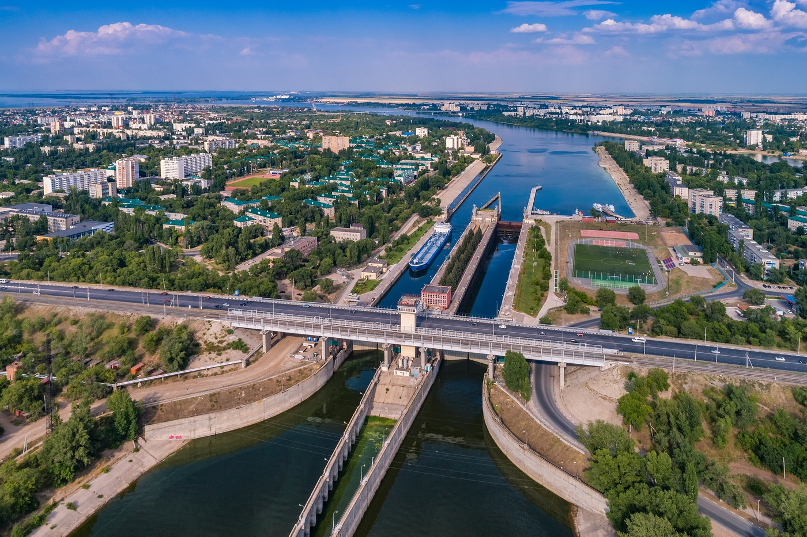
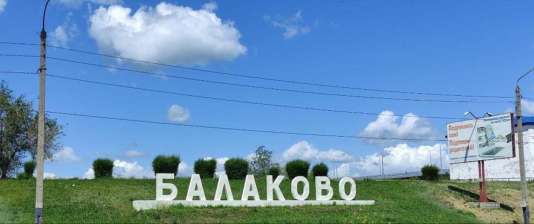
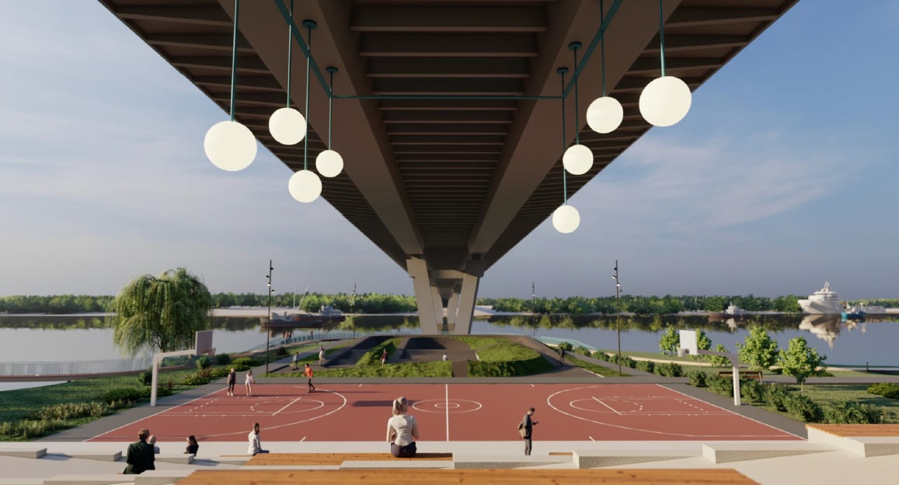
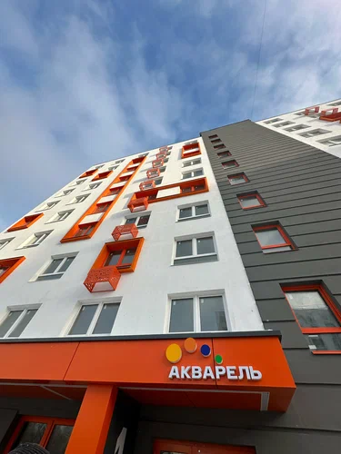
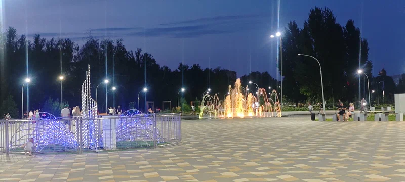
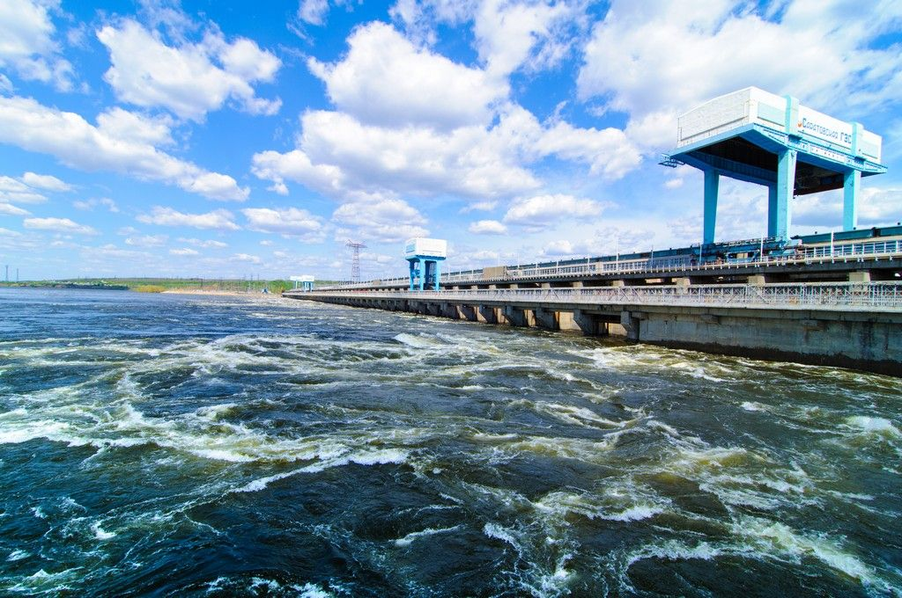
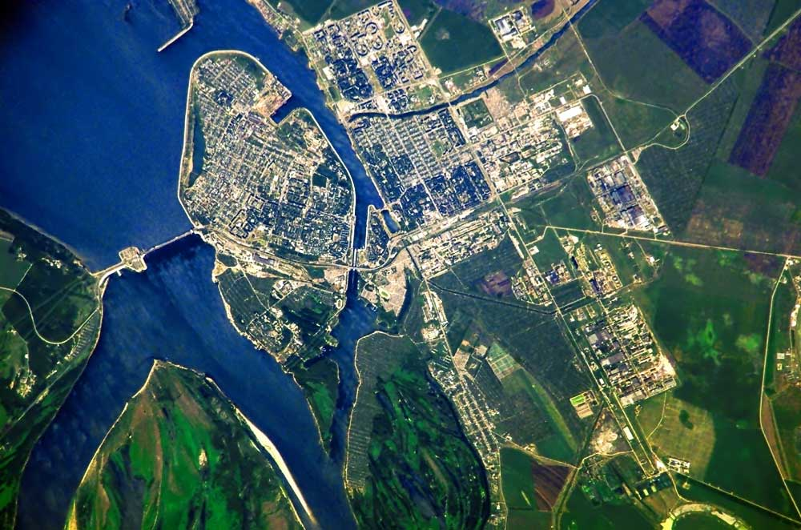
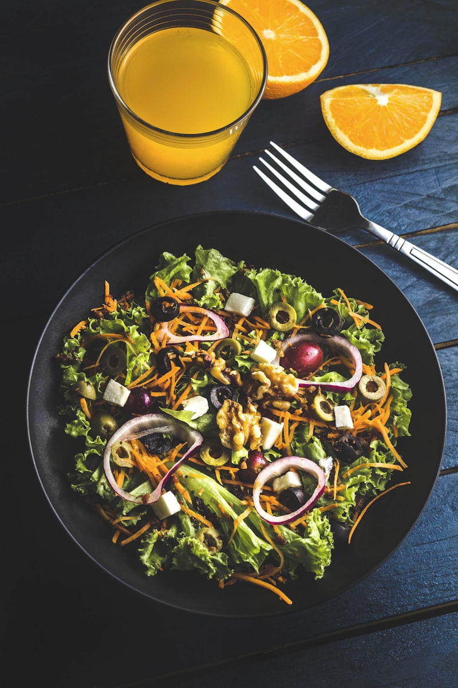
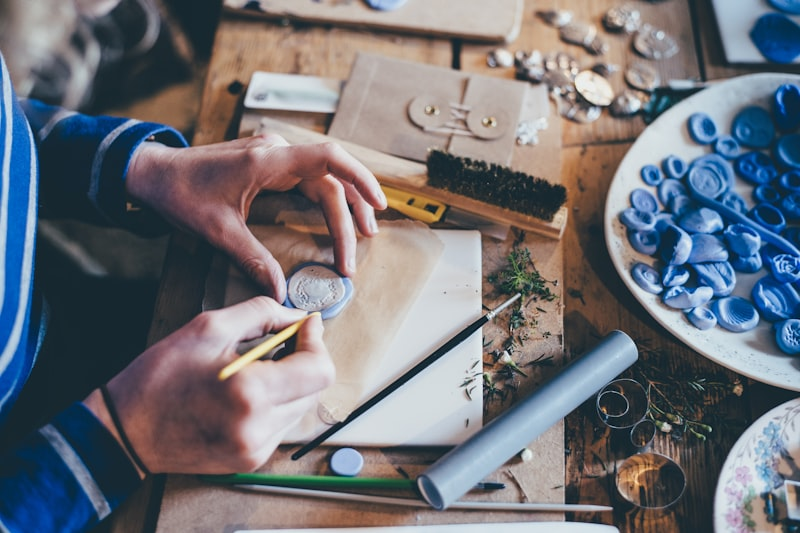
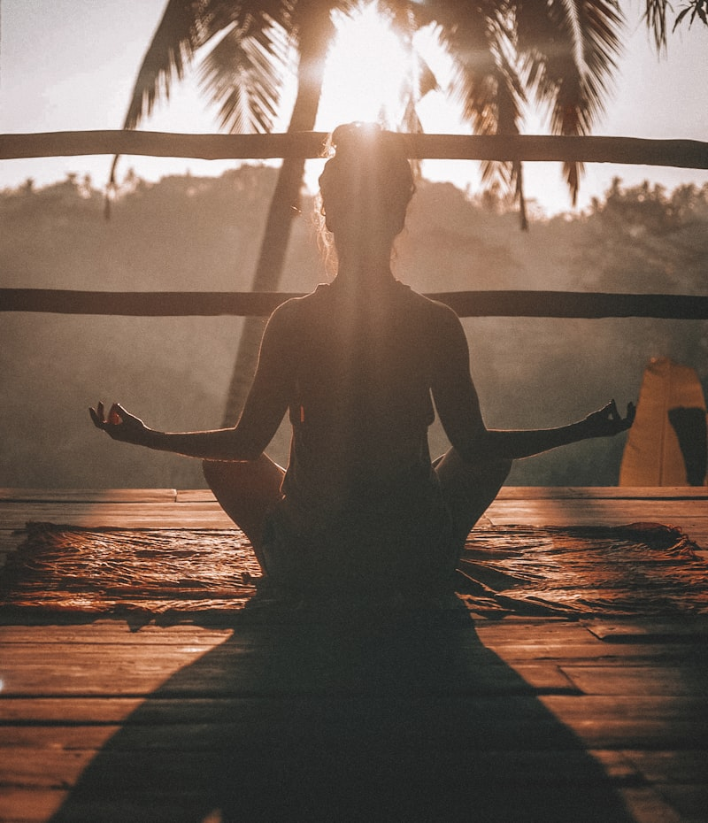

Панорама Балаково с высоты
Обзорная прогулка по набережной, мостам и ключевым площадкам города в вечернее время.

Панорамы Волги, индустриальные ландшафты и живые события — собрали лучшие кадры, чтобы почувствовать атмосферу города.
фотографий города в одном месте: набережные, улицы и природа Балаково.
видео прогулок по ключевым точкам и трансляций городских событий.
Летние фестивали, энергия промзоны и тихие дворы — пролистайте подборку, чтобы выбрать новое место для прогулки.












Одна страница — четыре настроения Балаково: от рассветов и работы порта до вечерних огней.
Мосты подсвечивают первые лучи солнца.
Трубы и цеха — символы промышленного Балаково.
Главная площадь во время летнего фестиваля.
Экотропы и прогулочные дорожки на берегу.
Подборка видеороликов: прогулка по городу, трансляции событий и интервью жителей.
Обзорная прогулка по набережной, мостам и ключевым площадкам города в вечернее время.
Живая музыка, арт-ярмарка и вечерний салют — атмосфера летнего праздника у воды.
Короткие интервью о любимых локациях и проектах, которые делают Балаково комфортным.